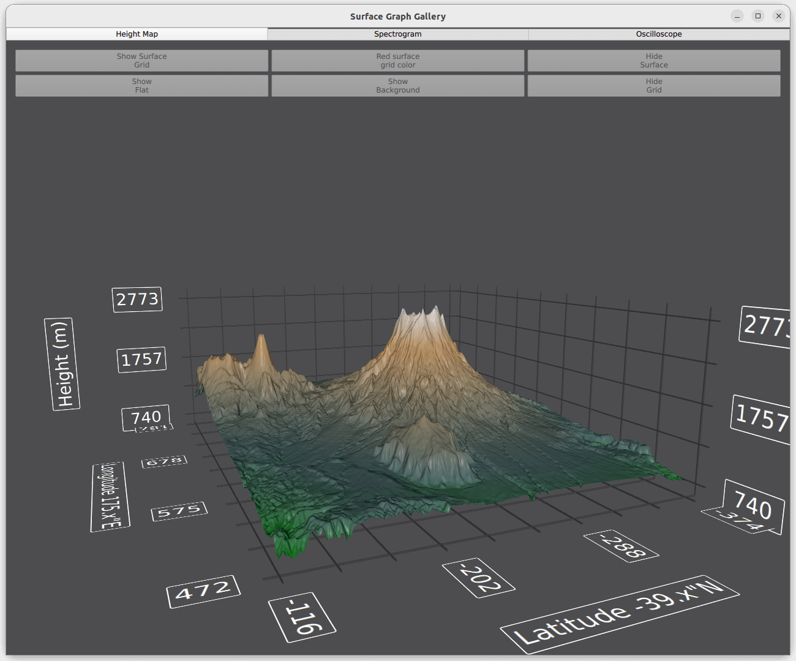

Surface Graph Gallery
Gallery with three different ways to use a Surface3D graph.
Surface Graph Gallery demonstrates three different custom features with Surface3D graphs. The features have their own tabs in the application.
The following sections concentrate on those features only and skip explaining the basic functionality - for more detailed QML example documentation, see Simple Scatter Graph.

Running the Example
To run the example from Qt Creator, open the Welcome mode and select the example from Examples. For more information, visit Building and Running an Example.
Height Map
In the Height Map tab, generate a surface graph from height data. The data used is a height map of Mount Ruapehu and Mount Ngauruhoe in New Zealand.
Adding Data to the Graph
The data is set using HeightMapSurfaceDataProxy, which reads height information from a height map image. The proxy itself is contained in a Surface3DSeries. Inside the HeightMapSurfaceDataProxy the heightMapFile property specifies the image file containing the height data. The value properties in the proxy define the minimum and maximum values for surface area width, depth, and height. The z and x values are in latitude and longitude, approximately at the real-world position, and the y is in meters.
Note: The aspect ratio of the graph is not set to real-life scale, but the height is exaggerated instead.
Surface3DSeries { id: heightSeries flatShadingEnabled: false drawMode: Surface3DSeries.DrawSurface HeightMapSurfaceDataProxy { heightMapFile: "://qml/surfacegallery/heightmap.png" // We don't want the default data values set by heightmap proxy, but use // actual coordinate and height values instead autoScaleY: true minYValue: 740 maxYValue: 2787 minZValue: -374 // ~ -39.374411"N maxZValue: -116 // ~ -39.115971"N minXValue: 472 // ~ 175.471767"E maxXValue: 781 // ~ 175.780758"E } onDrawModeChanged: heightMapView.checkState() }
Displaying the Data
In main.qml, set up the Surface3D element to display the data.
First, define the custom gradient to be used for the surface. Set the colors from position 0.0 to 1.0 with ColorGradient, with two extra stops to make the graph more vivid:
ColorGradient { id: surfaceGradient ColorGradientStop { position: 0.0; color: "darkgreen"} ColorGradientStop { position: 0.15; color: "darkslategray" } ColorGradientStop { position: 0.7; color: "peru" } ColorGradientStop { position: 1.0; color: "white" } }
Set this element into the baseGradients property in the theme used in Surface3D:
theme: Theme3D { type: Theme3D.ThemeStoneMoss font.family: "STCaiyun" font.pointSize: 35 colorStyle: Theme3D.ColorStyleRangeGradient baseGradients: [surfaceGradient] // Use the custom gradient }
Use the buttons to control other Surface3D features.
The first button toggles on and off the surface grid. The draw mode cannot be cleared completely, so unless the surface itself is visible, the surface grid cannot be hidden:
onClicked: { if (heightSeries.drawMode & Surface3DSeries.DrawWireframe) heightSeries.drawMode &= ~Surface3DSeries.DrawWireframe; else heightSeries.drawMode |= Surface3DSeries.DrawWireframe; }
The second one sets the surface grid color:
onClicked: { if (Qt.colorEqual(heightSeries.wireframeColor, "#000000")) { heightSeries.wireframeColor = "red"; text = "Black surface\ngrid color"; } else { heightSeries.wireframeColor = "black"; text = "Red surface\ngrid color"; } }
The third one toggles the surface on or off in the surface draw mode. The draw mode cannot be cleared completely, so unless the surface grid is visible, the surface itself cannot be hidden:
onClicked: { if (heightSeries.drawMode & Surface3DSeries.DrawSurface) heightSeries.drawMode &= ~Surface3DSeries.DrawSurface; else heightSeries.drawMode |= Surface3DSeries.DrawSurface; }
The fourth sets the for shading mode. If you are running the example on OpenGL ES system, flat shading is not available:
onClicked: { if (heightSeries.flatShadingEnabled) { heightSeries.flatShadingEnabled = false; text = "Show\nFlat" } else { heightSeries.flatShadingEnabled = true; text = "Show\nSmooth" } }
The remaining buttons control the graph background features.
Spectrogram
In the Spectrogram tab, display polar and cartesian spectrograms and use orthographic projection to show them in 2D.
A spectrogram is a surface graph with a range gradient used to emphasize the different values. Typically, spectrograms are shown with two-dimensional surfaces, which is simulated with a top-down orthographic view of the graph. To enforce the 2D effect, disable the graph rotation via mouse or touch when in the orthographic mode.
Creating a Spectrogram
To create a 2D spectrogram, define a Surface3D item with the data given in the Surface3DSeries with an ItemModelSurfaceDataProxy:
Surface3D { id: surfaceGraph anchors.fill: parent Surface3DSeries { id: surfaceSeries flatShadingEnabled: false drawMode: Surface3DSeries.DrawSurface baseGradient: surfaceGradient colorStyle: Theme3D.ColorStyleRangeGradient itemLabelFormat: "(@xLabel, @zLabel): @yLabel" ItemModelSurfaceDataProxy { itemModel: surfaceData.model rowRole: "radius" columnRole: "angle" yPosRole: "value" } }
The key properties for enabling the 2D effect are orthoProjection and scene.activeCamera.cameraPreset. Remove the perspective by enabling orthographic projection for the graph, and the Y-dimension by viewing the graph directly from above:
// Remove the perspective and view the graph from top down to achieve 2D effect orthoProjection: true scene.activeCamera.cameraPreset: Camera3D.CameraPresetDirectlyAbove
Since this viewpoint causes the horizontal axis grid to be mostly obscured by the surface, flip the horizontal grid to be drawn on top of the graph:
flipHorizontalGrid: true
Polar Spectrogram
Depending on the data, it is sometimes more natural to use a polar graph instead of a cartesian one. This is supported via the polar property.
Add a button to switch between polar and cartesian modes:
Button { id: polarToggle anchors.margins: 5 anchors.left: parent.left anchors.top: parent.top width: spectrogramView.buttonWidth // Calculated elsewhere based on screen orientation text: "Switch to\n" + (surfaceGraph.polar ? "cartesian" : "polar") onClicked: surfaceGraph.polar = !surfaceGraph.polar; }
In the polar mode, X-axis is converted into the angular polar axis, and Z-axis is converted into a radial polar axis. The surface points are recalculated according to the new axes.
The radial axis labels are drawn outside the graph by default. To draw them right next to the 0 degree angular axis inside the graph, define only a small offset for them:
radialLabelOffset: 0.01
To enforce the 2D effect, disable graph rotation in orthographic mode by overriding the default input handler with a custom one, which automatically toggles the rotationEnabled property based on the projection mode:
inputHandler: TouchInputHandler3D { rotationEnabled: !surfaceGraph.orthoProjection }
Oscilloscope
In the Oscilloscope tab, combine C++ and QML in an application, and show data that dynamically changes.
Data Source in C++
The item model based proxies are good for simple or static graphs, but use basic proxies to achieve the best performance when displaying data changing in realtime. These are not supported in QML, as the data items they store do not inherit QObject and cannot therefore be directly manipulated from QML code. To overcome this limitation, implement a simple DataSource class in C++ to populate the data proxy of the series.
Create a DataSource class to provide two methods that can be invoked from QML:
class DataSource : public QObject { Q_OBJECT ... Q_INVOKABLE void generateData(int cacheCount, int rowCount, int columnCount, float xMin, float xMax, float yMin, float yMax, float zMin, float zMax); Q_INVOKABLE void update(QSurface3DSeries *series);
The first method, generateData(), creates a cache of simulated oscilloscope data to display. The data is cached in a format that QSurfaceDataProxy accepts:
// Populate caches for (int i = 0; i < cacheCount; i++) { QSurfaceDataArray &cache = m_data[i]; float cacheXAdjustment = cacheStep * i; float cacheIndexAdjustment = cacheIndexStep * i; for (int j = 0; j < rowCount; j++) { QSurfaceDataRow &row = *(cache[j]); float rowMod = (float(j)) / float(rowCount); float yRangeMod = yRange * rowMod; float zRangeMod = zRange * rowMod; float z = zRangeMod + zMin; qreal rowColWaveAngleMul = M_PI * M_PI * rowMod; float rowColWaveMul = yRangeMod * 0.2f; for (int k = 0; k < columnCount; k++) { float colMod = (float(k)) / float(columnCount); float xRangeMod = xRange * colMod; float x = xRangeMod + xMin + cacheXAdjustment; float colWave = float(qSin((2.0 * M_PI * colMod) - (1.0 / 2.0 * M_PI)) + 1.0); float y = (colWave * ((float(qSin(rowColWaveAngleMul * colMod) + 1.0)))) * rowColWaveMul + QRandomGenerator::global()->bounded(0.15f) * yRangeMod; int index = k + cacheIndexAdjustment; if (index >= columnCount) { // Wrap over index -= columnCount; x -= xRange; } row[index] = QVector3D(x, y, z); } } }
The second method, update(), copies one set of the cached data into another array, which is set to the data proxy of the series by calling QSurfaceDataProxy::resetArray(). To minimize overhead, reuse the same array if the array dimensions have not changed:
// Each iteration uses data from a different cached array m_index++; if (m_index > m_data.count() - 1) m_index = 0; QSurfaceDataArray array = m_data.at(m_index); int newRowCount = array.size(); int newColumnCount = array.at(0)->size(); // If the first time or the dimensions of the cache array have changed, // reconstruct the reset array if (!m_resetArray || series->dataProxy()->rowCount() != newRowCount || series->dataProxy()->columnCount() != newColumnCount) { m_resetArray = new QSurfaceDataArray(); m_resetArray->reserve(newRowCount); for (int i = 0; i < newRowCount; i++) m_resetArray->append(new QSurfaceDataRow(newColumnCount)); } // Copy items from our cache to the reset array for (int i = 0; i < newRowCount; i++) { const QSurfaceDataRow &sourceRow = *(array.at(i)); QSurfaceDataRow &row = *(*m_resetArray)[i]; for (int j = 0; j < newColumnCount; j++) row[j].setPosition(sourceRow.at(j).position()); } // Notify the proxy that data has changed series->dataProxy()->resetArray(m_resetArray);
Even though we are operating on the array pointer previously set to the proxy, QSurfaceDataProxy::resetArray() still needs to be called after changing the data in it to prompt the graph to render the data.
To be able to access the DataSource methods from QML, expose the data source by making the DataSource a QML_ELEMENT:
class DataSource : public QObject { Q_OBJECT QML_ELEMENT
Further, declare it as a QML module in the CMakeLists.txt:
qt6_add_qml_module(surfacegallery
URI SurfaceGallery
VERSION 1.0
NO_RESOURCE_TARGET_PATH
SOURCES
datasource.cpp datasource.h
...
)
To use QSurface3DSeries pointers as parameters for the DataSource class methods on all environments and builds, make sure the meta type is registered:
qRegisterMetaType<QSurface3DSeries *>();
QML Application
To use the DataSource, import the QML module and create an instance of DataSource to be used:
import SurfaceGallery ... DataSource { id: dataSource }
Define a Surface3D graph and give it a Surface3DSeries:
Surface3D { id: surfaceGraph anchors.fill: parent Surface3DSeries { id: surfaceSeries drawMode: Surface3DSeries.DrawSurfaceAndWireframe itemLabelFormat: "@xLabel, @zLabel: @yLabel"
Don't specify a proxy for the Surface3DSeries that you attach to the graph. This makes the series utilize the default QSurfaceDataProxy.
Hide the item label with itemLabelVisible. With dynamic, fast-changing data, a floating selection label would be distracting and difficult to read.
itemLabelVisible: false
You can display the selected item information in a Text element instead of the default floating label above the selection pointer:
onItemLabelChanged: { if (surfaceSeries.selectedPoint == surfaceSeries.invalidSelectionPosition) selectionText.text = "No selection"; else selectionText.text = surfaceSeries.itemLabel; }
Initialize the DataSource cache when the graph is complete by calling a helper function generateData(), which calls the method with the same name in DataSource:
Component.onCompleted: oscilloscopeView.generateData(); ... function generateData() { dataSource.generateData(oscilloscopeView.sampleCache, oscilloscopeView.sampleRows, oscilloscopeView.sampleColumns, surfaceGraph.axisX.min, surfaceGraph.axisX.max, surfaceGraph.axisY.min, surfaceGraph.axisY.max, surfaceGraph.axisZ.min, surfaceGraph.axisZ.max); }
To trigger the updates in data, define a Timer, which calls the update() method in DataSource at requested intervals:
Timer { id: refreshTimer interval: 1000 / frequencySlider.value running: true repeat: true onTriggered: dataSource.update(surfaceSeries); }
Enabling Direct Rendering
Since this application potentially deals with a lot of rapidly changing data, it uses direct rendering mode for performance. To enable antialiasing in this mode, change the surface format of the application window. The default format used by QQuickView doesn't support antialiasing. Use the utility function provided to change the surface format in main.cpp:
#include <QtGraphs/qutils.h> ... // Enable antialiasing in direct rendering mode viewer.setFormat(qDefaultSurfaceFormat(true));
Example Contents
Files:
- surfacegallery/CMakeLists.txt
- surfacegallery/datasource.cpp
- surfacegallery/datasource.h
- surfacegallery/main.cpp
- surfacegallery/qml/surfacegallery/SpectrogramData.qml
- surfacegallery/qml/surfacegallery/SurfaceHeightMap.qml
- surfacegallery/qml/surfacegallery/SurfaceOscilloscope.qml
- surfacegallery/qml/surfacegallery/SurfaceSpectrogram.qml
- surfacegallery/qml/surfacegallery/main.qml
- surfacegallery/surfacegallery.pro
- surfacegallery/surfacegallery.qrc
Images:
{kind=link}